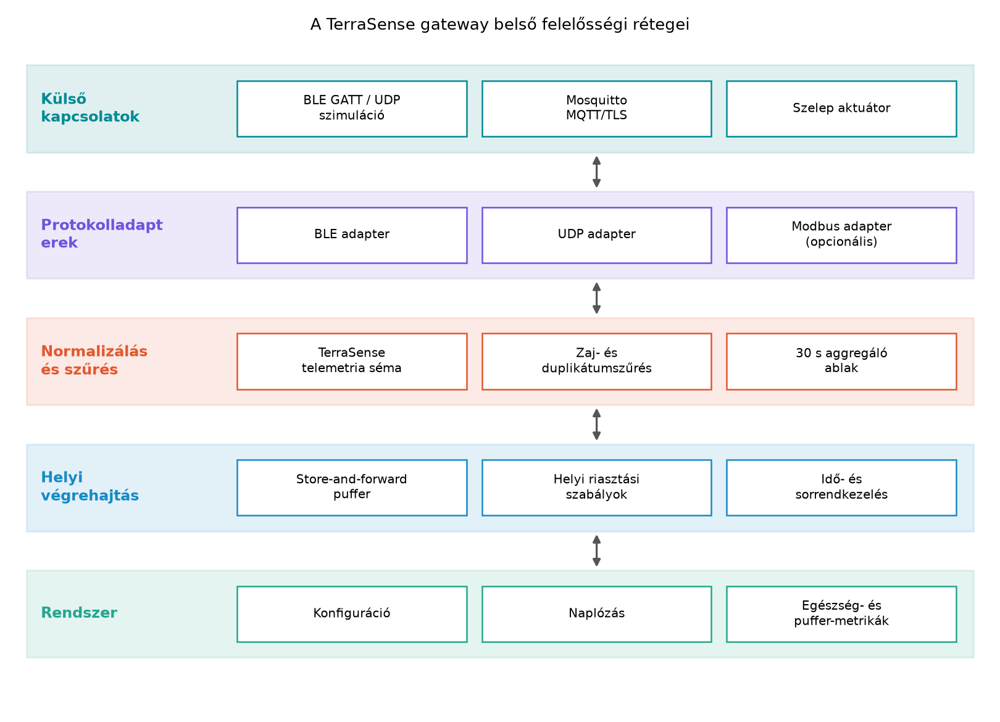

A TerraSense üvegházban a Topológiák: csillag,
mesh, gateway-alapú hálózatok alfejezet döntése szerint a
n001, n002, … szenzorcsomópontok csillag
topológiában kapcsolódnak egy központi egységhez. Az eszközök BLE
GATT-tel, a labor szimulációban UDP-vel küldik a mérési adatokat. A Mi az IoT? Rétegek, szereplők, adatút alfejezetben
bevezetett rétegmodell alapján ez a központi egység az edge/gateway
réteg: ez az a hely, ahol a helyi eszközhálózat kilép az internetező
világba.
Ha minden ts-node közvetlenül MQTT/TLS-t beszélne a
brokerrel, akkor mindegyik eszköznek TCP/IP hálózati stackre,
TLS-tanúsítványra, IP-címre és folyamatos vagy gyakori rádióidőre lenne
szüksége. Ez energia, memória, provisioning és karbantartási költség. A
gateway ezt a komplexitást egyetlen, jobban erőforrás-ellátott
komponensbe emeli ki.
Emellett a felhőkapcsolat nem garantált: az üvegház
internetkapcsolata kieshet, a ts-backend karbantartás alatt
lehet, a Mosquitto broker rövid időre elérhetetlenné válhat. Ilyenkor a
rendszernek akkor is működnie kell: a mérési adatokat nem szabad
elveszíteni, és a kritikus öntözésvezérlésnek helyben kell maradnia.
Ezért a gateway nem egyszerű „drótnélküli híd”, hanem üzleti és
biztonsági szempontból is önálló komponens.
Definíció. Az IoT gateway (átjáró) az edge rétegben elhelyezkedő szoftver- és hardverkomponens, amely egy vagy több helyi/peremi protokollt és adatmodellt (például BLE GATT, Modbus, UDP, LoRaWAN) alakít át egy vagy több felhő- vagy vállalati protokollra (például MQTT, OPC UA, Kafka), elválasztja a helyi eszközhálózatot a felhőhálózattól, és emellett pufferelést, helyi feldolgozást, valamint biztonsági határfunkciót is megvalósít.
A gateway tehát nem router: a router a hálózati rétegben csomagokat továbbít anélkül, hogy értené az alkalmazási adatot. A gateway ezzel szemben alkalmazási rétegbeli határon dolgozik, ismeri a telemetria sémáját, és képes azon döntést, átalakítást, szűrést végezni.
A TerraSense gateway fő feladatai a következők.
Protokollfordítás. A ts-gw a labor
szimulációban UDP datagramokat fogad, valós hardveren pedig BLE GATT
értesítéseket olvas. Mindkettőből a TerraSense MQTT topicjaira kerülő,
egységes telemetriaüzenet lesz. Ipari környezetben ugyanez a modell
alkalmazható Modbus RTU/TCP vagy OPC UA bemenetre is.
Aggregálás és szűrés. Az eszköz általában gyakrabban mér, mint ahogy a felhőnek az adatra szüksége van. A gateway időablakokban átlagot, minimumot, maximumot vagy minta-darabszámot számolhat, és csak az aggregált eredményt küldi tovább. A zajos, tartományon kívüli vagy duplikált mérést is itt érdemes eltávolítani.
Offline puffer. Ha az MQTT-kapcsolat megszakad, a gatewaynek az üzeneteket tartósan, jellemzően lemezen kell tárolnia, majd a kapcsolat visszatérésekor sorrendben visszaküldenie. Ez a Store-and-forward: offline működés és visszatöltés alfejezet témája lesz.
Helyi riasztás. Vannak olyan szabályok, amelyeknek
akkor is futniuk kell, ha a felhő nem érhető el. Ilyen például a
talajnedvesség alsó küszöbértéke: ha a ts-node mérése
szerint a talaj túl száraz, a gatewaynek helyben kell kezdeményeznie az
öntözőszelep nyitását, és riasztást kell küldenie.
Biztonsági határ. A gateway a helyi eszközhálózatot elválasztja a felhő felé nyitott hálózattól. Az eszközök nem kapnak közvetlen internetelérést, és nem is fut rajtuk teljes TLS/MQTT stack; a gateway viszont a kifelé irányuló kapcsolatban mTLS-tanúsítvánnyal azonosítja magát, és titkosított csatornán kommunikál a brokerrel.
A következő ábra a gateway belső felelősségi rétegeit mutatja.

A rétegek leírása:
terrasense/<site>/<node>/telemetry
üzenet. Itt ellenőrizzük a mérési tartományt, a seq sorszám
alapján kiszűrjük a duplikátumokat, és elvégezzük az aggregálást.Egy konkrét adatút a következőképpen néz ki: a BLE-adapter fogad egy
23.1 hőmérséklet-értesítést, a normalizáló réteg
hozzárendeli a gh1 site-ot, a n001
node-azonosítót, az érvényes seq és UTC ts
mezőket, a szűrő eldönti, hogy az érték érvényes-e, az aggregáló pedig
30 s-os ablakban átlagot számol. Az elkészült üzenet bekerül a
store-and-forward pufferbe, majd az MQTT-kapcsolaton eljut a brokerre.
Ha a kapcsolat éppen nincs, az üzenet a lemezen marad, és visszatöltésre
vár.
A legfontosabb tervezési kérdés, hogy egy adott funkció az eszközön, a gatewayen vagy a felhőben fusson-e. A válasz mindig energia, késleltetés, sávszélesség, offline tűrőképesség és karbantarthatóság függvénye.
| Funkció | Eszközön | Gatewayen | Felhőben | TerraSense döntés és indok |
|---|---|---|---|---|
| Protokollfordítás | Nem, az eszköznek egy protokollt kell beszélnie | Igen, ez az elsődleges feladat | Nem értelmezhető | Gatewayen: a ts-node BLE/UDP marad, a
ts-gw MQTT-t beszél |
| Azonnali szelepvédelem | Kritikus határérték, hardverközeli védelem | Megerősítő szabály, időablak, helyi riasztás | Policy, audit, flottaszintű elemzés | Eszközön és gatewayen is, mert a szelepvezérlésnek akkor is működnie kell, ha a gateway vagy a felhő kiesik |
| Zaj- és duplikátumszűrés | Alapvető tartományellenőrzés | Részletes, seq alapú szűrés |
Statisztikai utófeldolgozás | Gatewayen a részletes szűrés, mert az eszközön korlátozott a memória |
| Aggregálás | Csak akkor, ha az energiaköltség indokolja | 30 s ablak, min/max/átlag | Hosszú távú aggregálás az adatbázisban | Gatewayen, mert így csökken a felhő felé irányuló üzenetszám |
| Offline puffer | Nem, az eszköz memóriája kicsi | Igen, lemezen | A felhő kiesésekor a gatewaynek kell pufferelnie | Gatewayen, ez a store-and-forward alapja |
| Helyi riasztás | Életvédelmi/berendezésvédelmi határ | Részletes szabályok, timeout és nyugtázás | Globális szabályok, értesítés, tanulás | Gatewayen, mert a helyi döntésnek felhő nélkül is futnia kell |
| Hálózati biztonsági határ | Eszközoldali védelem, például BLE-párosítás | Határzóna, mTLS a broker felé | Központi PKI, audit | A gateway a biztonsági határ, az eszközöknek nincs közvetlen internetelérésük |
| Hosszú távú analitika, gépi tanulás | Nem | Később edge-feldolgozás lehet | Igen, itt van elegendő erőforrás | Felhőben, később a gatewayen csak előszűrt jellemzők |
A táblázatból kiolvasható az az általános elv, hogy az eszközön a hardverközeli, gyors védelem fut, a gatewayen az üzleti és offline feldolgozás, a felhőben pedig a hosszú távú, flottaszintű elemzés.
A későbbi alfejezetek a ts-gw szolgáltatást fokozatosan
építik fel. Ahhoz, hogy a fejlesztési lépések egymásra épüljenek, most
rögzítjük a gateway feladatlistáját egy verziózott dokumentumban.
Munkakönyvtár:
mkdir -p ~/iot-labor/i035 && cd ~/iot-labor/i035A gateway-feladatlista.md tartalma a következő:
# TerraSense gateway-feladatlista (i035)
# Állapot: jóváhagyott alap az i036, i037 és i039 számára.
R1 Protokollfordítás: BLE GATT (valós hardver) / UDP (szimuláció) -> MQTT.
Labor bemenet: udp:127.0.0.1:4000, kimenet:
terrasense/<site>/<node>/telemetry.
R2 Normalizálás: az üzenetben node_id, site, monoton seq és ts epoch_ms
mezők szerepelnek, SI mértékegységekkel (°C, %RH, %).
R3 Aggregálás: 30 s ablakonként per node min/max/átlag és minta-darabszám,
ha az adott mérési típusra az aggregálás engedélyezett.
R4 Szűrés: tartományon kívüli minta elvetése, seq alapú duplikátumszűrés,
érvénytelen időbélyeggel rendelkező üzenet elutasítása.
R5 Store-and-forward: offline puffer lemezen, FIFO sorrend, a kapcsolat
visszatérése után idempotens újraküldés.
R6 Helyi riasztás: talajnedvesség < 20 % -> öntözőszelep nyitás + riasztás;
talajnedvesség > 80 % vagy hőmérséklet > 40 °C -> öntözés blokkolása
és figyelmeztetés.
R7 Biztonsági határ: az eszközhálózat nem érheti el közvetlenül az
internetet; a ts-gw kifelé mTLS-tanúsítvánnyal csatlakozzon a brokerhez.
R8 Üzemeltetés: puffer mélysége, uptime, MQTT kapcsolat állapota és
naplózás a gateway egészségállapotához.Továbbvitt eredmény. A
~/iot-labor/i035/gateway-feladatlista.md R1–R8
követelményeit használja az A ts-gw szolgáltatás
C++-ban: protokollfordítás MQTT-re alfejezet a szolgáltatás vázának
kialakításához, a Store-and-forward: offline működés
és visszatöltés alfejezet a puffer implementációjához, valamint a Helyi feldolgozás: szűrés, aggregálás,
eseménydetektálás alfejezet a szűrő- és aggregálólogikához.
A feladatlista akkor jó, ha minden rétegbeli döntés visszavezethető a TerraSense követelményeire. Ellenőrizhetjük a dokumentum szerkezetét:
grep -n '^R[0-9]' ~/iot-labor/i035/gateway-feladatlista.mdA kimenetben mind a nyolc követelménynek szerepelnie kell. Funkcionális ellenőrzést a későbbi alfejezetek adnak, de már most érdemes egy képzeletbeli offline tesztet végigjátszani: kapcsoljuk ki a brokert, generáljunk hőmérséklet-üzeneteket, és ellenőrizzük, hogy az R5 szerinti puffer fogadja azokat, az R6 szerinti szabály pedig a talajnedvesség-csökkenésre helyben reagál.
| Hibatünet | Lehetséges ok | Javítás |
|---|---|---|
| Offline tesztben nincs pufferelt üzenet | A gateway csak memóriában tárol, újrainduláskor elvesznek az adatok | R5 szerint lemezen tárolni, indításkor visszatölteni |
| A helyi riasztás csak a felhő visszatérése után fut le | A szabálylogika a backendben van | R6 szerint a gatewayen is futtatni |
| A dashboardon ismeretlen topic jelenik meg | A normalizálás nem a TerraSense topic-konvencióját követi | R1–R2 szerint egységes site/node és topicnevek |
| Ugyanaz a mérés kétszer érkezik meg | Hiányzik a seq alapú duplikátumszűrés |
R4 szerint ellenőrizni a monoton sorszámot |
A gateway csak egy „buta” protokollfordító. Ha a gateway pufferelés és helyi szabályok nélkül csak átalakítja az üzeneteket, akkor a rendszer a felhő kiesésekor elveszíti az adatait, és a kritikus vezérlés is megszakadhat. A gateway akkor értékes, ha offline is hasznos marad.
A biztonsági határt az eszközre vagy a felhőbe
helyezzük. Ha minden ts-node közvetlen
internetelérést kap, akkor minden eszköz támadási felület lesz, és a
TLS-kulcsokat is minden eszközön kezelni kell. A gatewayre helyezett
határ csökkenti a támadási felületet és a provisioning
költségét.
A QoS 1 önmagában elég az offline működéshez. A QoS 1 azt garantálja, hogy a broker és a kliens között legalább egyszer megérkezik az üzenet, de ha a gateway nem tárolja tartósan az üzenetet, akkor a broker kiesése alatt az adat még a gatewayen belül elveszhet.
(a) Sorolj fel három olyan TerraSense-helyzetet, amelyben a gatewaynek akkor is döntenie kell, ha a felhő nem elérhető.
(b) Számítsd ki, hogy mennyi MQTT
PUBLISH üzenetet takarít meg a gateway egy óra alatt, ha 20
ts-node csomópont 5 másodpercenként mér, a gateway pedig
percenként egy aggregált üzenetet küld minden csomópontról.
(c) Készítsd el a
~/iot-labor/i035/gateway-feladatlista.md fájlt a fenti
nyolc követelménnyel, majd egészítsd ki az R8 követelményt egy új
sorral: a gateway naplózza a store-and-forward puffer legutóbbi sikeres
visszatöltésének UTC időpontját.
(d) Egy offline teszt után a gateway újraindul, majd ugyanazokat az üzeneteket másodszor is elküldi az MQTT brokernak. Melyik követelményt kell módosítani vagy kiegészíteni ahhoz, hogy ez ne okozzon duplikátumot a backendben? Mit írnál a feladatlistába?
(a) Három lehetséges helyzet:
(b) A nyers üzenetszám:
Az aggregált üzenetszám, ha minden csomópontról percenként egy üzenet megy:
A megtakarítás:
Tehát a gateway körülbelül 91,7 %-kal csökkenti az MQTT
PUBLISH üzenetek számát ebben a példában.
(c) A fájl létrehozása után az R8 alá beillesztendő sor:
R8 Üzemeltetés: puffer mélysége, uptime, MQTT kapcsolat állapota és
naplózás a gateway egészségállapotához.
Utolsó sikeres puffervisszatöltés: UTC epoch_ms időbélyeggel,
hibás visszatöltés esetén a hiba okával együtt.(d) Az R5 követelményt kell kiegészíteni az idempotens visszatöltés pontosabb leírásával. A módosított sor például:
R5 Store-and-forward: offline puffer lemezen, FIFO sorrend, a kapcsolat
visszatérése után idempotens újraküldés. Minden pufferelt üzenet
megtartja az eredeti node_id/seq/ts hármast, és a visszatöltés előtt
a gateway ellenőrzi, hogy az adott (node_id, seq) pár még nem lett-e
már elküldve. Újraindulás után a puffer állapota ugyanezt az
ellenőrzést használja.Így a backend a (node_id, seq) párt használhatja
idempotens feldolgozásra, és a duplikátum nem okoz kétszeres
beszúrást.
Az alfejezet definiálta az IoT gatewayt mint alkalmazási rétegbeli
protokoll- és adatmodell-határt, és bemutatta a TerraSense
ts-gw komponens feladatait: protokollfordítás BLE/UDP-ről
MQTT-re, normalizálás, aggregálás, szűrés, store-and-forward, helyi
riasztás, biztonsági határ és üzemeltetés. A rétegábra rögzítette a
gateway belső felelősségi köreit. A döntési táblázat elválasztotta az
eszközön, a gatewayen és a felhőben futtatandó funkciókat.
Továbbvitt eredmény: a
~/iot-labor/i035/gateway-feladatlista.md R1–R8
követelményei, amelyeket az A ts-gw szolgáltatás
C++-ban: protokollfordítás MQTT-re, a Store-and-forward: offline működés és visszatöltés
és a Helyi feldolgozás: szűrés, aggregálás,
eseménydetektálás alfejezetek használnak tovább.
Az alfejezet a gateway fogalmát és a TerraSense-feladatlistát
általános, stabil rendszertervezési elvekből vezeti le. A fejezethez
tartozó kiindulópontok a systemd, a Docker, a Paho MQTT és a Mosquitto
dokumentációi, azonban ezeknek a konkrét CLI-kapcsolóit, verzióit és
API-it nem ellenőriztük ebben az alfejezetben. A ts-gw
tényleges C++ implementációjához a Paho C/C++ kliens és a Mosquitto
aktuális verziójának dokumentációját kell ellenőrizni. A TerraSense
telemetria-sémájának és topicjainak részleteit a Adatformátumok: JSON, CBOR, Protocol Buffers, SenML
alfejezet rögzíti; az itt megadott 30 s aggregálási ablak a
mintarendszer kiinduló, később méréssel finomítható értéke.